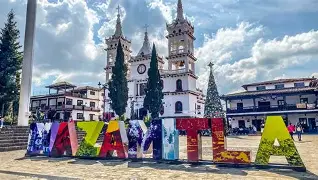
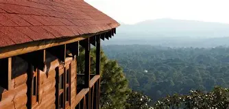
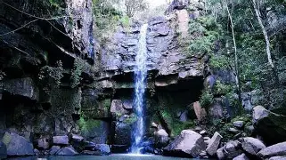

Un pueblito en la sierra de Jalisco

Mazamitla es un Pueblo Mágico de Jalisco que está en la sierra, rodeado de bosque. Casi siempre hace fresco y por eso muchas familias van a pasar el fin de semana en cabañas. Tiene calles empedradas, casas con tejados y una plaza muy tranquila.


Desde Guadalajara se toma la carretera hacia Tuxpan y Mazamitla. Puedes ir en carro o en camión. Para ver la ruta exacta entra al mapa: